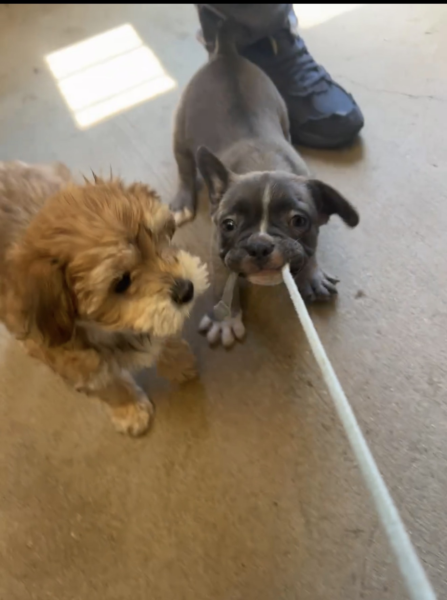

Adopt
Find dogs, cats, and small animals ready for a new home.
Pawsome Pet Rescue helps abandoned and stray animals find a safe loving home to grow in.

Our goal is to rescue, care for, and find pets a new home while helping teach responsible pet ownership.
Find dogs, cats, and small animals ready for a new home.
Help with events, cleaning, pet care, and community programs.
Donations help support food, shelter, and medical care.